Despre serial
Scooby-Doo, Where Are You! este un serial american de animație lansat în 1969. Povestea urmărește aventurile grupului Mystery Inc., format din Fred, Daphne, Velma, Shaggy și câinele lor vorbitor, Scooby-Doo. Împreună, prietenii călătoresc prin diferite locuri și investighează mistere care par să implice fantome, monștri și creaturi neobișnuite.
Cu ajutorul indiciilor, al spiritului de observație și al lucrului în echipă, grupul încearcă să descopere adevărul din spatele fiecărui mister. Iar când lucrurile devin prea înfricoșătoare, Shaggy și Scooby găsesc întotdeauna timp pentru ceva de mâncare!
Scooby-Doo, Where Are You!
1969
Animație, mister, comedie, aventură
Joe Ruby și Ken Spears
Hanna-Barbera
Scooby-Doo și Mystery Inc.
Episoade · Sezonul 1

Noaptea unui Cavaler
Gașca Mystery Inc. întâlnește un cavaler misterios care pare să fi prins viață.
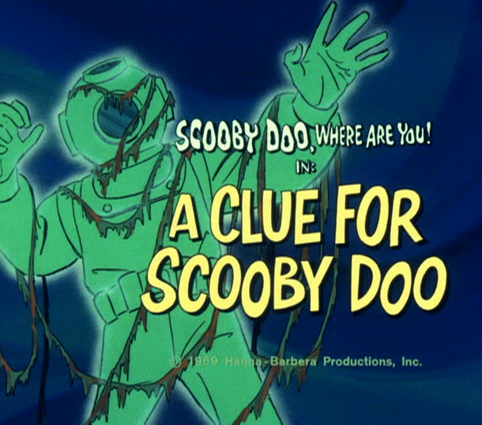
Un indiciu pentru Scooby-Doo
Scooby și prietenii săi pornesc pe urmele unui nou mister.
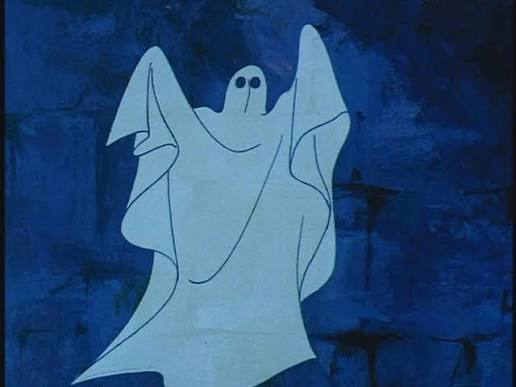
Haos la Castel
O vizită la un castel misterios se transformă într-o aventură neașteptată.
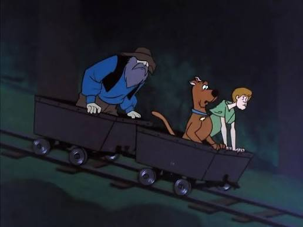
Vezi-ți de treaba ta!
Gașca descoperă noi indicii într-o aventură plină de surprize.

Momeală pentru un hoț de câini
Mystery Inc. investighează dispariția unor câini și încearcă să rezolve misterul.
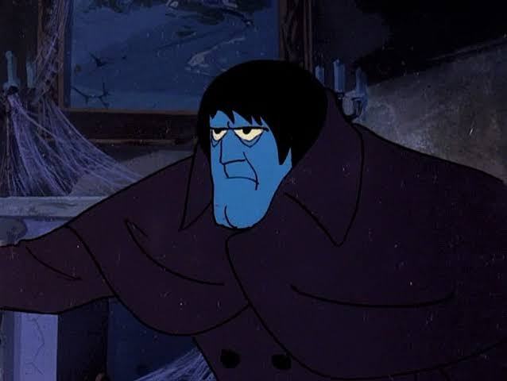
Ce se-ntâmplă aici?
Scooby și gașca Mystery Inc. pornesc într-o nouă aventură misterioasă!
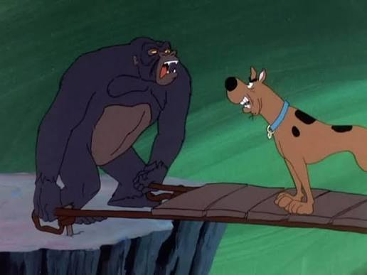
Nu te maimuțări!
O nouă aventură îi pune pe Scooby și prietenii săi pe urmele unui mister.
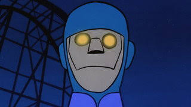
Hărmălaie în parcul de distracții
Scooby și gașca ajung într-un parc de distracții plin de surprize.
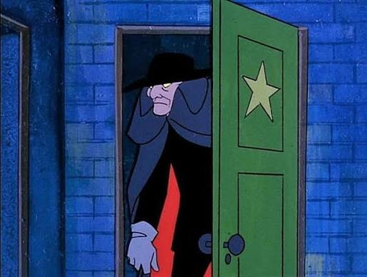
Culmea din culise
În culisele unei noi aventuri, Mystery Inc. descoperă un mister neașteptat.
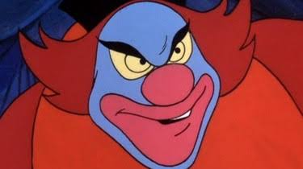
Tămbălău în cortul circului
Scooby și prietenii săi ajung la circ, unde îi așteaptă un nou mister.
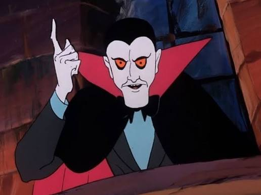
O gloată de fantome la galop
La Castelul Franken, gașca întâlnește personaje înfricoșătoare: Dracula, monstrul lui Frankenstein și un vârcolac.
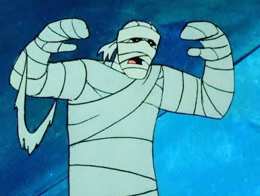
Scooby-Doo și mumia
O mumie misterioasă apare la un muzeu și pare să caute o monedă antică aflată la Shaggy.
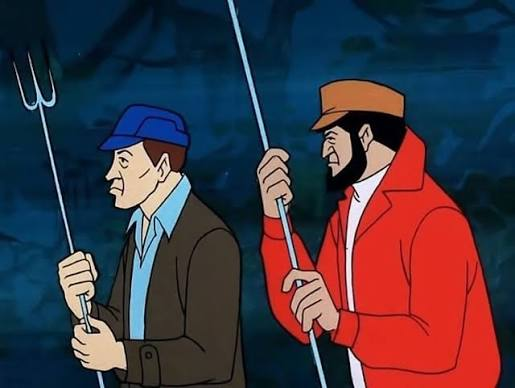
Care este vrăjitoarea?
Rătăciți într-o mlaștină, prietenii întâlnesc un zombie și investighează legenda unei vrăjitoare.
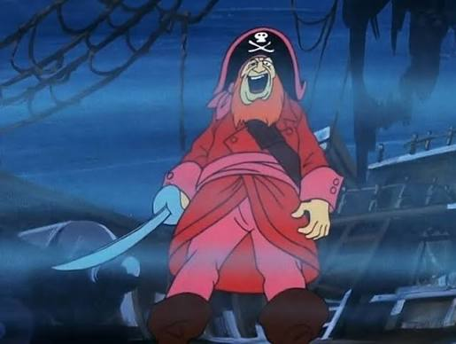
Dispari, corabie fantomă!
Fantoma piratului Redbeard atacă nave, iar Mystery Inc. urcă la bordul corabiei misterioase.
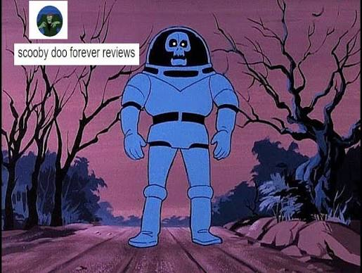
Fantoma din spațiu
La un aeroport abandonat, gașca dă peste o creatură misterioasă care pare venită din spațiu.
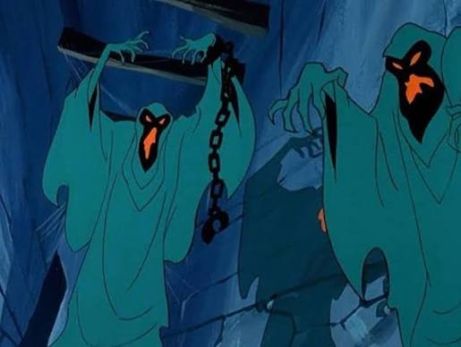
O noapte de groază
Shaggy trebuie să petreacă o noapte într-un conac bântuit pentru a primi o moștenire.
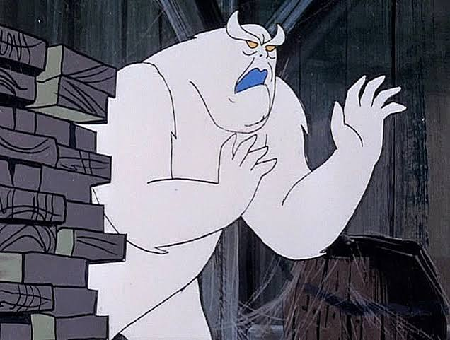
Fantoma Zăpezii
Într-o excursie la schi, Scooby și prietenii săi investighează apariția misterioasei Fantome a Zăpezii.
Personajele principale
Echipa Mystery Inc. este formată din cinci prieteni care rezolvă împreună mistere și descoperă cine se ascunde în spatele aparițiilor misterioase.
🐶 Scooby-Doo
Shaggy Rogers
Fred Jones
Daphne Blake
Velma Dinkley
Misterele Mystery Inc.
Fiecare aventură îi poartă pe Scooby și prietenii săi într-un loc nou, unde îi așteaptă indicii, personaje misterioase și situații neașteptate. Deși uneori par înfricoșătoare, misterele au de obicei o explicație care poate fi descoperită prin atenție și colaborare.